員工APP和後台 設計亮點
回作品集
一、根據操作情境，設計使用功能
1.頻率高、即時性高的操作
以強化操作提示、簡化操作流程為設計方向。
如：員工福利「回覆留言」的操作機制，
當該福利項目有留言未回覆，顯示「圖示按鈕」給予提示。
當該福利項目有留言未回覆，顯示「圖示按鈕」給予提示。
B1_1.1員工福利-上架區
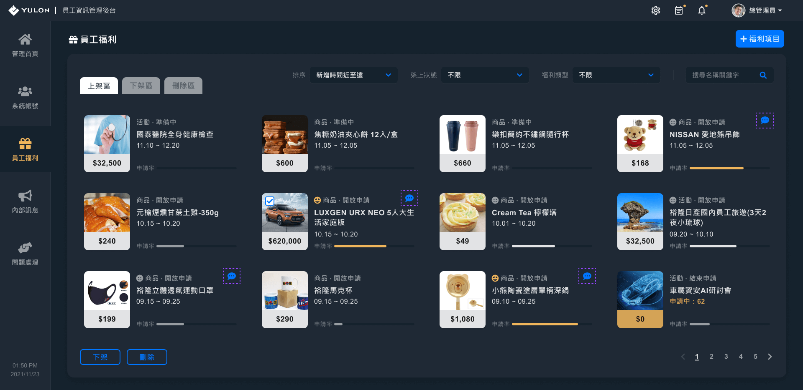
點擊「留言」圖示按鈕，直接開啟彈跳視窗，給予進行回覆。
B1_7.1留言管理-彈跳視窗
2.頻率低、重要性高的操作
以強化操作提示、給予完整操作介面為設計方向。
如：管理員工福利「處理申請紀錄」的操作機制，
當該福利項目申請時間結束，顯示申請數提示。
當該福利項目申請時間結束，顯示申請數提示。
B1_1.1員工福利-上架區
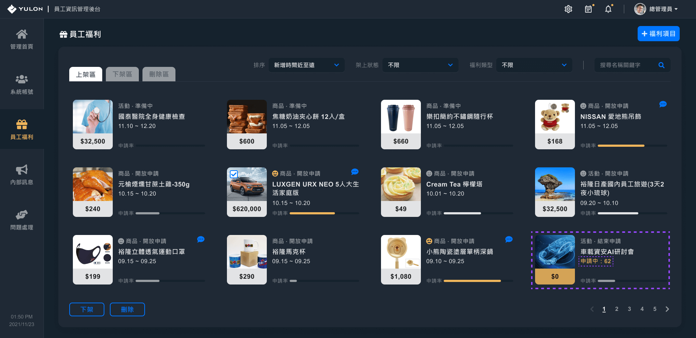
引導管理員前往「申請紀錄」頁面進行批次處理。
B3_12.1福利項目內容-申請紀錄
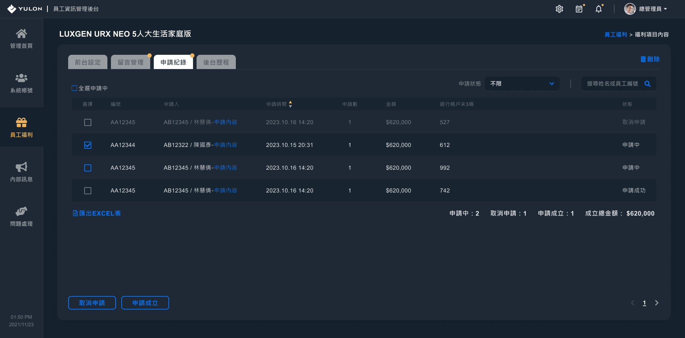
二、針對使用需求，設計功能機制
針對福利項目，有彈性設置申請表單。
因福利項目不同，申請所需填寫的資料也有所差異，
為滿足這方面需求，並降低製作成本和開發可行性，了解常見的業務情境後，在介面與資料取用上提出執行方案。
為滿足這方面需求，並降低製作成本和開發可行性，了解常見的業務情境後，在介面與資料取用上提出執行方案。
B1員工福利(前台)
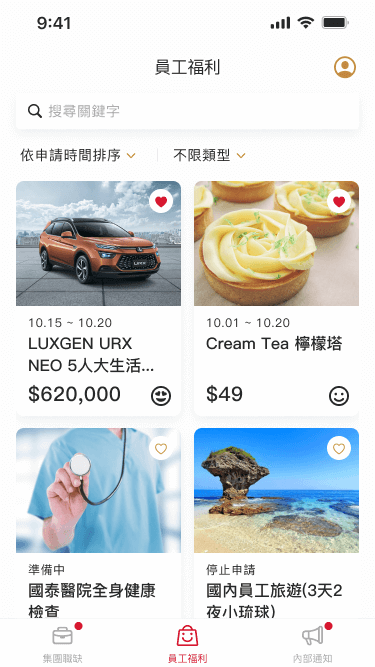
B3申請福利(前台)

B3申請福利(前台)
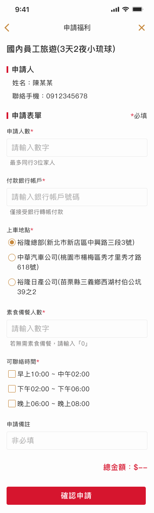
為能有彈性的設置表單，於後台製作功能介面給予操作。
*設置後的表單欄位，除前台之外，也同步顯示於後台。
*設置後的表單欄位，除前台之外，也同步顯示於後台。
B2新增福利項目

B3福利項目內容-前台設定 編輯模式
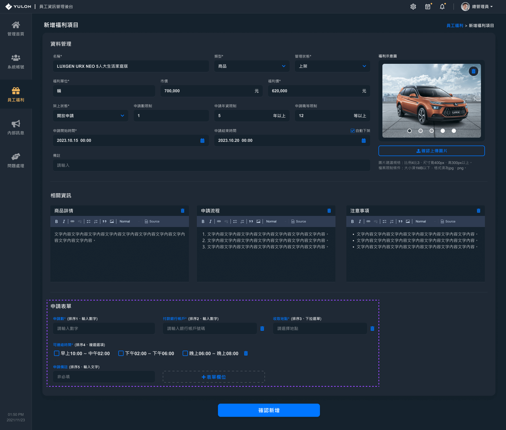
點擊「新增表單欄位」按鈕，開啟新增欄位視窗。
B2_4新增表單欄位-彈跳視窗
可以選擇欄位的輸入框類型、排序、是否必填和輸入欄位名稱、備住，以達彈性設置表單之需求。
可以選擇欄位的輸入框類型、排序、是否必填和輸入欄位名稱、備住，以達彈性設置表單之需求。
B2_4新增表單欄位-彈跳視窗(欄位類型：輸入文字、輸入數字)

B2_4新增表單欄位-彈跳視窗(欄位類型：下拉選單、單選選項、複選選項)

點擊「表單欄位名稱」，開啟設置欄位視窗。
B2_5設置表單欄位-彈跳視窗
對於常用的欄位項目，透過程式開發「檢核輸入資料」功能，以模組化方式套用欄位，完善申請表單的操作機制(防錯)。 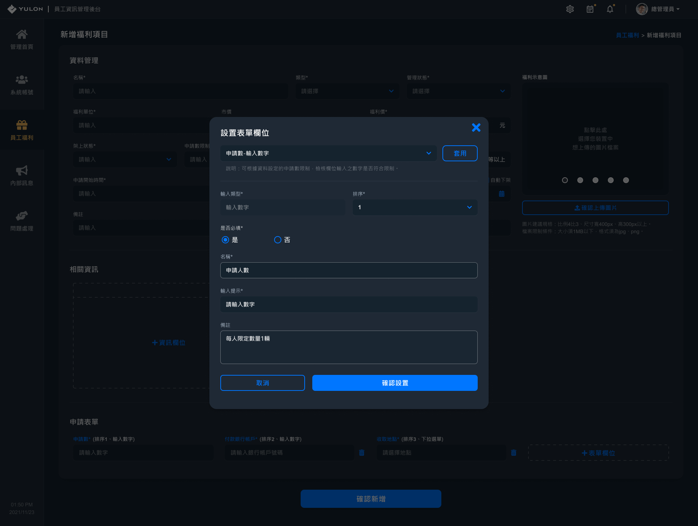
對於常用的欄位項目，透過程式開發「檢核輸入資料」功能，以模組化方式套用欄位，完善申請表單的操作機制(防錯)。 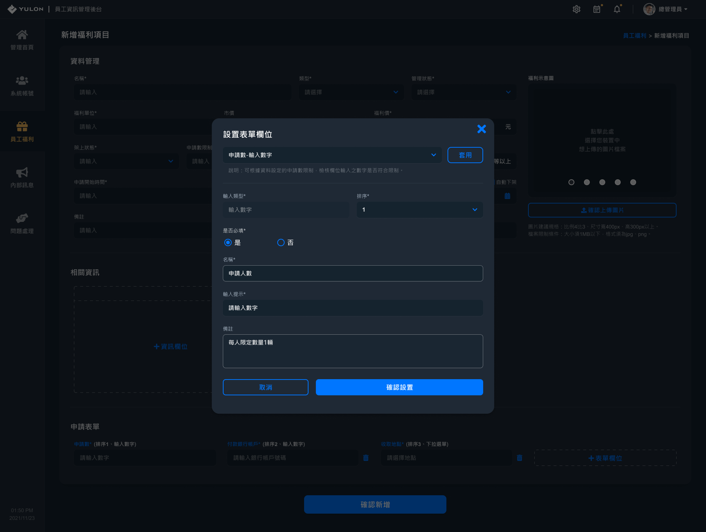
※如此，設計貼合業務情境，滿足工作需求。
已瀏覽完 設計亮點 功能
設計具有層次概念
一、使用流程：
如：使用者有APP操作問題時，在問題回報前，先安排前往「常見問題」的資訊頁面。
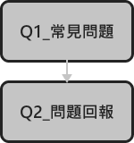
前導情境
頁面發生錯誤

引導使用者至Q1常見問題
內容是裕隆相關單位，過往業務經驗中，統整問題情況和處理方式的資訊。
內容是裕隆相關單位，過往業務經驗中，統整問題情況和處理方式的資訊。

若無符合的問題狀況，引導使用者至Q2問題回報

※如此，有效率解決使用者問題，減少管理單位處理的人工成本。
二、介面視覺引導：
如：管理後台-員工福利，以線框稿與裕隆管理單位了解操作需求，作為規劃介面用色之依據。
依介面色調(暗色)對資訊重要度：依視覺引導力大至小，黑灰 < 灰 < 白 < 黃，給予操作物件用色
依介面色調(暗色)對資訊重要度：依視覺引導力大至小，黑灰 < 灰 < 白 < 黃，給予操作物件用色
B1_1.1員工福利-上架區
黑灰(最弱)：
介面物件無法使用。
如：「員工福利頁」處於第1頁時，「上一頁」選項無法使用，以黑灰為用色。
介面物件無法使用。
如：「員工福利頁」處於第1頁時，「上一頁」選項無法使用，以黑灰為用色。
灰(較弱)：
介面物件非當前選擇、使用狀態，一般資訊。
非當前選擇，如：頁面選單、內容選項(tab)、頁碼選項。
非使用狀態，如：未勾選福利項目時，「下架」、「刪除」福利項目按鈕為非使用狀態，輸入框未輸入資料。
一般資訊，如：福利項目「類型」、「架上狀態」。
介面物件非當前選擇、使用狀態，一般資訊。
非當前選擇，如：頁面選單、內容選項(tab)、頁碼選項。
非使用狀態，如：未勾選福利項目時，「下架」、「刪除」福利項目按鈕為非使用狀態，輸入框未輸入資料。
一般資訊，如：福利項目「類型」、「架上狀態」。
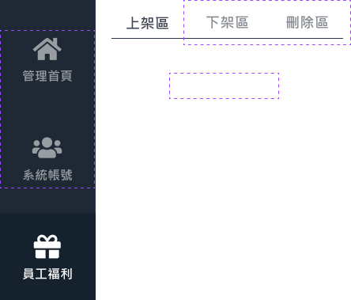
白(較強)：
介面物件為當前選擇、使用狀態，重要資訊。
當前選擇，如：頁面選單、內容選項(tab)、頁碼選項。
使用狀態，如：輸入框已輸入資料。
重要資訊，如：頁面標題、福利項目「名稱」、「申請期間」、「申請率」。
介面物件為當前選擇、使用狀態，重要資訊。
當前選擇，如：頁面選單、內容選項(tab)、頁碼選項。
使用狀態，如：輸入框已輸入資料。
重要資訊，如：頁面標題、福利項目「名稱」、「申請期間」、「申請率」。
黃(最強)：
介面物件、資訊為最重要資訊。
如：高熱門度、高申請率的福利項目資訊。
介面物件、資訊為最重要資訊。
如：高熱門度、高申請率的福利項目資訊。
※如此，以視覺引導操作，增加介面閱讀性和易用性。
三、功能操作模式：
如：管理後台-員工福利，依操作情境設計介面樣式，
以「預設、鼠標懸停、勾選」福利項目為例。
以「預設、鼠標懸停、勾選」福利項目為例。
B1_1.1員工福利-上架區 勾選福利項目
預設(default)：
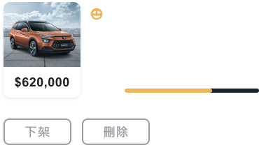
滑鼠懸停樣式(hover)：
福利項目顯示勾選框。
福利項目顯示勾選框。
勾選樣式(checked)：
勾選後，「下架」、「刪除」福利項目按鈕為轉為可使用狀態。
勾選後，「下架」、「刪除」福利項目按鈕為轉為可使用狀態。
※如此，避免「非當下使用情境」的介面功能提示，減輕使用者操作的認知成本。
四、版面主次配置：
如：以標題、列表排版形式區分一級主頁和次級主頁。
B1員工福利(一級主頁)
B3福利項目內容(次級主頁)
※如此，使用者能直覺反應當前頁面之層級，減輕操作認知成本。
已瀏覽完 設計亮點 介面
一、組合後設資料，形成具參考且易懂的數據資料
1.福利項目熱門度：
平均單日「點擊數」÷「前台帳號啟用數」之數字大小 = 熱門度。
2.福利項目申請率：
「前台帳號啟用數」÷福利項目「申請員工數」×100% = 申請率。
※如此，管理員可有效利用數據資料，作為員工福利政策之參考依據。
二、功能、資訊圖像化
收藏福利：
以「愛心」圖示，根據填色、線框狀態，表示已收藏、未收藏。
以「愛心」圖示，根據填色、線框狀態，表示已收藏、未收藏。
熱門度：
以「人物卡通頭像」，根據表情喜好程度，表示熱門度高低。
平均單日「點擊數」÷當前「前台帳號啟用數」。
小於1(倍)：無圖示。
大於等於1(倍)：。
大於等於2(倍)：。
以「人物卡通頭像」，根據表情喜好程度，表示熱門度高低。
平均單日「點擊數」÷當前「前台帳號啟用數」。
小於1(倍)：無圖示。
大於等於1(倍)：。
大於等於2(倍)：。
申請率：
以百分比進度條的形式呈現。
「前台帳號啟用數」÷福利項目「申請員工數」×100%。
以百分比進度條的形式呈現。
「前台帳號啟用數」÷福利項目「申請員工數」×100%。
※如此，將文字、數字以圖像方式呈現，增加版面閱讀效率。
已瀏覽完 設計亮點 其他